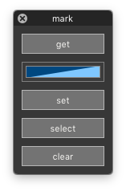

markSelect¶
-
class
MarkGlyphsDialog[source]¶ Bases:
hTools3.dialogs.hDialogA dialog to apply, clear and select mark colors in selected glyphs.
from hTools3.dialogs.glyphs.markSelect import MarkGlyphsDialog MarkGlyphsDialog()
-
key= 'com.hipertipo.hTools3.dialogs.glyphs.mark'¶
-
settings= {'markColor': (1, 0, 0, 0.5)}¶
-
title= 'mark'¶
-